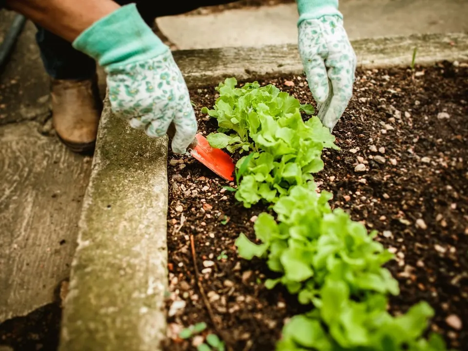
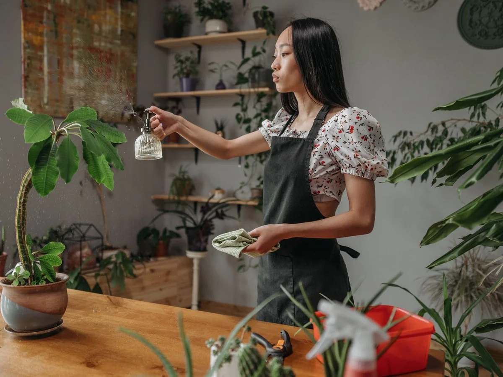
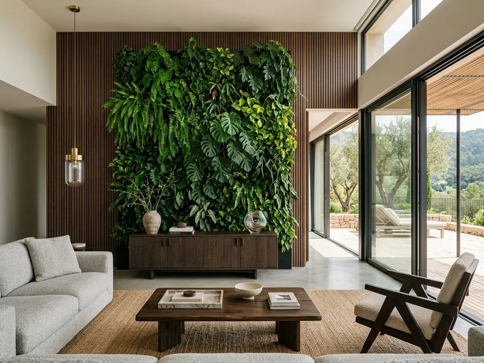
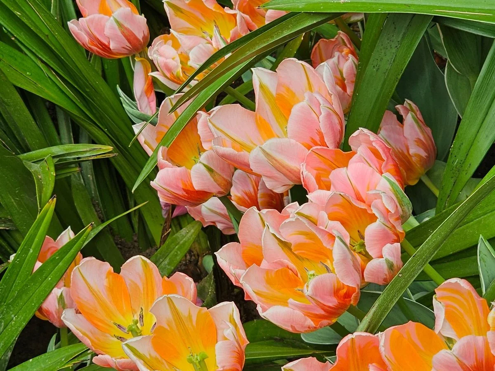
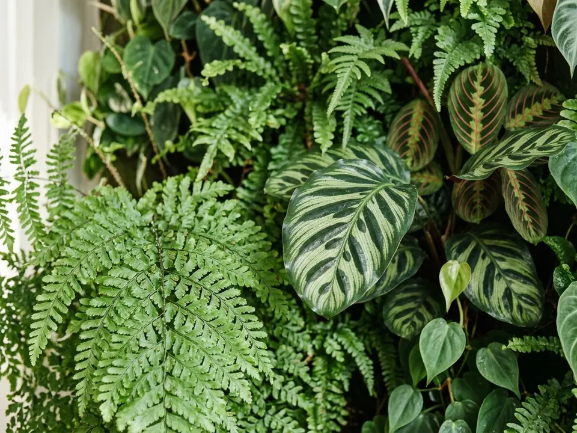
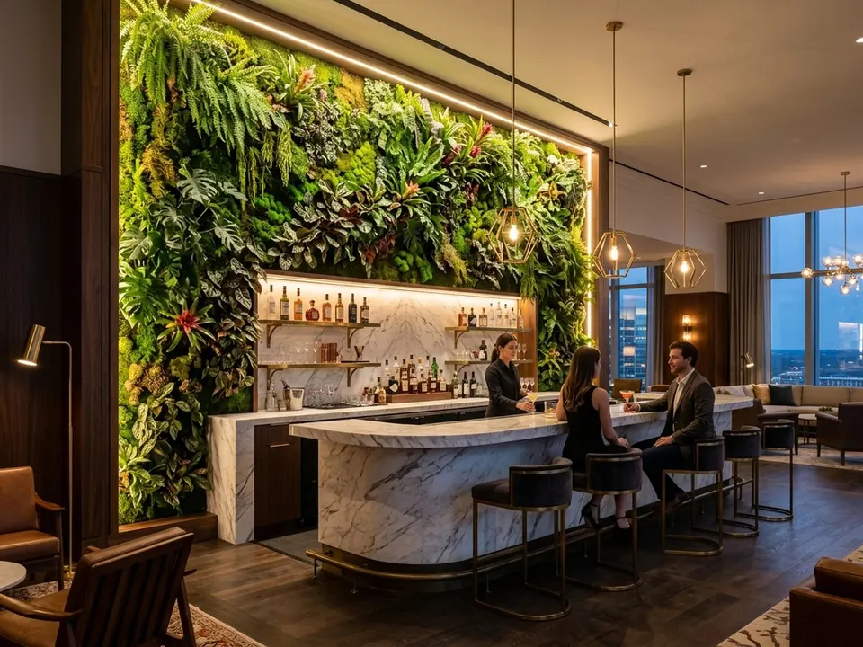
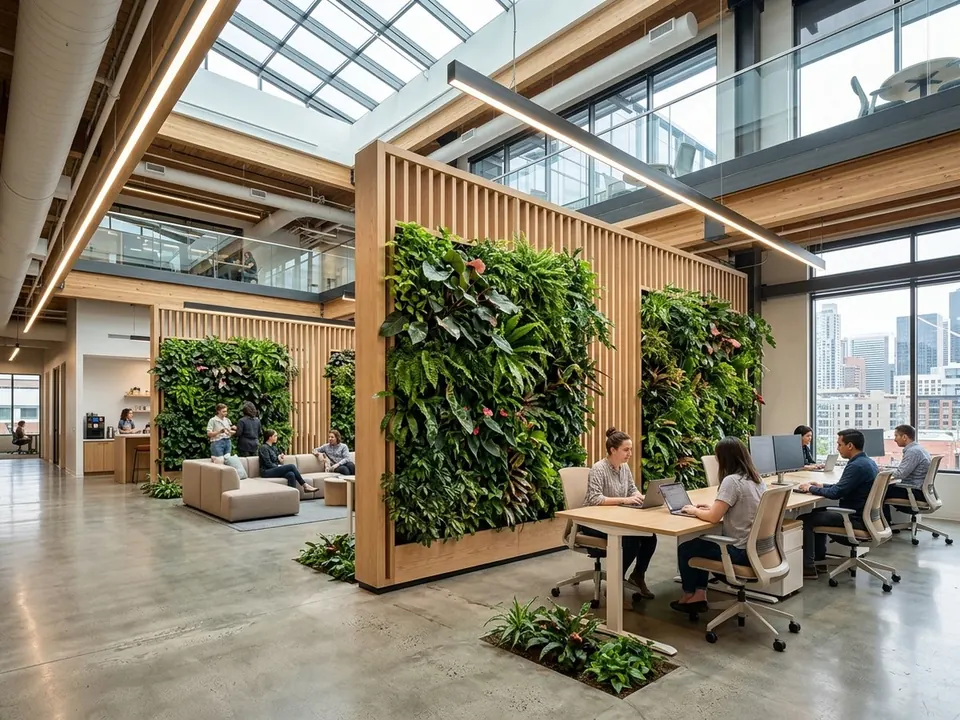

Dikey Bahçe Tasarımı ve Uygulaması
Boş bir duvarı, mekanın en çok konuşulan noktasına çeviren yeşil yüzeyler tasarlıyoruz. Alanın ışığına, kullanım yoğunluğuna ve bakım beklentinize göre en doğru bitki sistemini birlikte seçiyoruz.

Mekanınıza Göre Kurgulanan Yeşil Yüzeyler
Her dikey bahçe aynı değildir. Gün ışığı almayan bir koridor ile cam cepheli bir lobi farklı çözümler ister. Bu yüzden işe her zaman mekanı tanıyarak başlıyoruz: ışık, nem, havalandırma ve duvarın taşıma kapasitesi projenin temelini oluşturur.
Bakım istemeyen stabilize bitki ve yosun karışımları, gerçeğinden ayırt edilmesi zor yapay bitki sistemleri ya da ikisini birleştiren karma tasarımlar arasından ihtiyacınıza en uygun olanı öneriyoruz. Logo, aydınlatma ve çerçeve detaylarıyla dikey bahçenizi markanızın bir parçası haline getiriyoruz.
Dikey Bahçe Tasarımı Hizmetimizin Kapsamı
Stabilize Bitki Sistemleri
Sulama, toprak ve gün ışığı gerektirmeyen; doğal dokusunu yıllarca koruyan bitki ve yosun kompozisyonları.
Yapay Dikey Bahçe
UV dayanımlı, yanmaz sertifikalı yapay bitkilerle dış cephe ve yoğun kullanılan alanlar için dayanıklı çözümler.
Karma Tasarımlar
Stabilize yosun, yapay yaprak ve doğal dalları bir araya getiren, derinliği yüksek özel kompozisyonlar.
Logo ve Marka Entegrasyonu
Şirket logosunu, sloganı veya kurumsal renkleri yeşil yüzeyin içine işleyen tasarımlar.
Aydınlatma Detayları
Gizli LED ve spot aydınlatma ile gece de etkileyici görünen dikey bahçeler.
İç ve Dış Mekan
Ofis, otel, restoran, mağaza, balkon ve teraslar için alanın koşullarına uygun sistem seçimi.
Uygulama Örnekleri






Keşiften Montaja Dört Adım
Keşif ve Projelendirme
Telefon veya yerinde keşifle ihtiyacı dinliyoruz. Ölçü, fotoğraf ve beklentilere göre çizim ve görsel alternatifler hazırlıyoruz.
Tasarım Atölyesi
Onaylanan tasarım atölyemizde birebir üretilir. Yosun, bitki ve doğal dallar elde yerleştirilir; bitmiş iş onayınıza sunulur.
Paketleme ve Sevkiyat
Ürünler dokusunu koruyan özel paketleme ve montaj şablonlarıyla birlikte sevk edilir.
Montaj ve Teslim
Panolar atölyede hazırlandığı için sahada yalnızca montaj yapılır; alan kısa sürede kullanıma hazır olur.